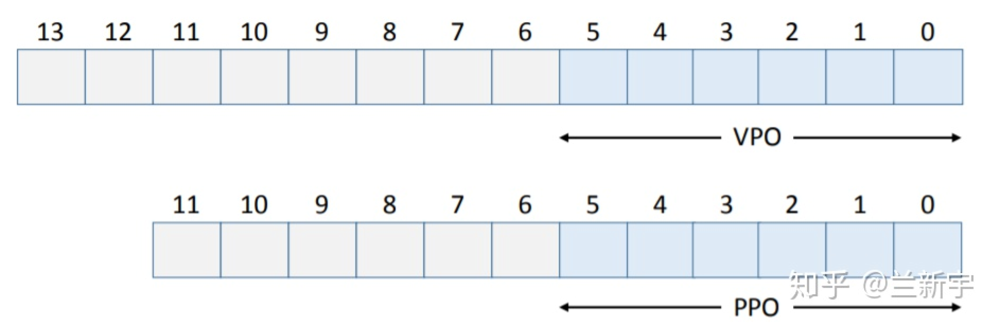
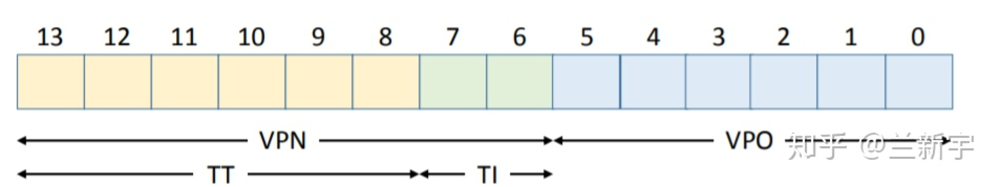
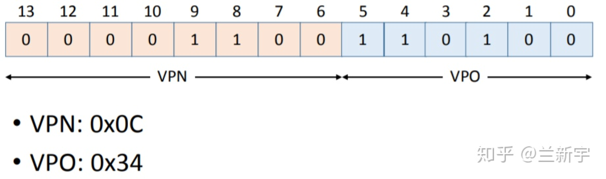
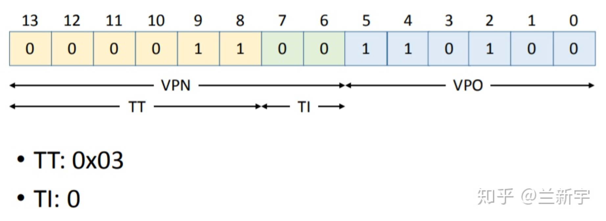
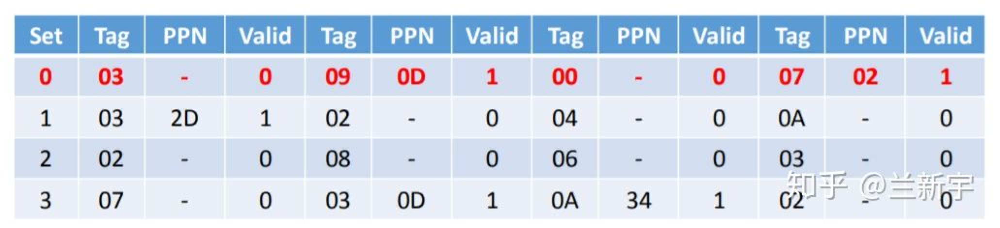
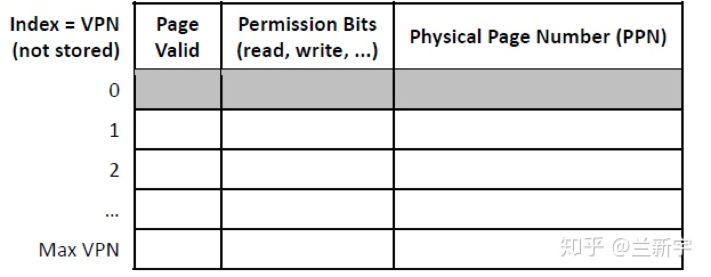
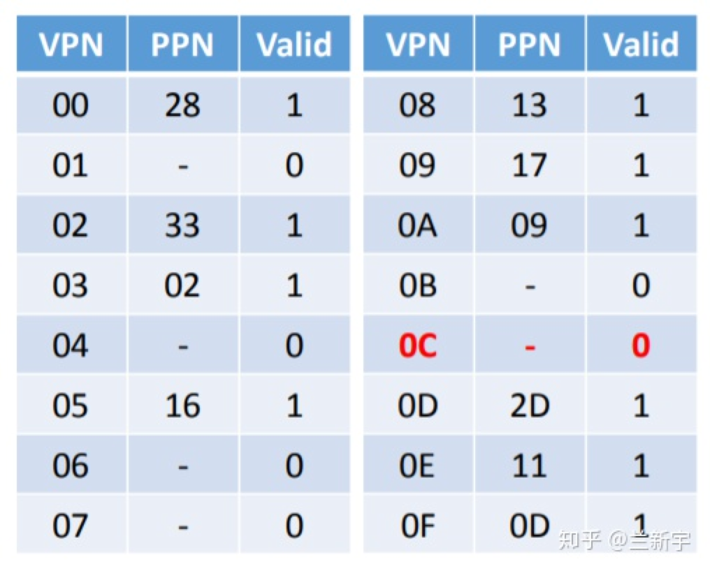
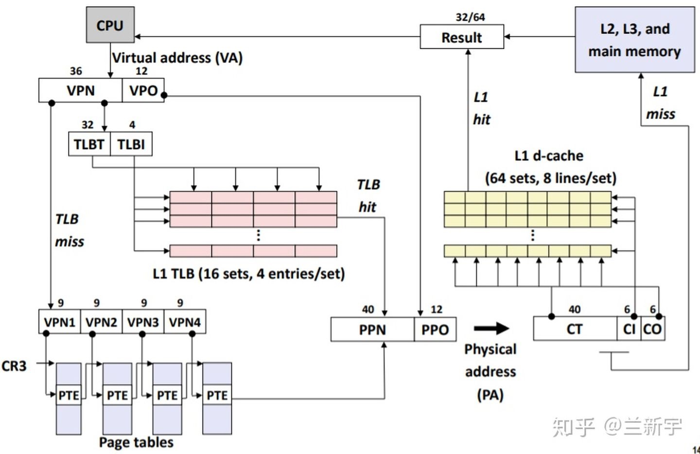

转载自https://zhuanlan.zhihu.com/p/65298260?utm_source=wechat_session&utm_medium=social&utm_oi=983771259783606272
在Linux，Windows等操作系统中，为什么不直接使用Physical Address（物理地址），而要用Virtual Address（虚拟地址）呢（在intel的手册中也被称为Linear Address，具体原因请参考这篇文章）？
https://zhuanlan.zhihu.com/p/67576012
因为使用虚拟地址可以带来诸多好处：
1.在支持多进程的系统中，如果各个进程的镜像文件都使用物理地址，则在加载到同一物理内存空间的时候，可能发生冲突。
2.直接使用物理地址，不便于进行进程地址空间的隔离。
3.物理内存是有限的，在物理内存整体吃紧的时候，可以让多个进程通过分时复用的方法共享一个物理页面（某个进程需要保存的内容可以暂时swap到外部的disk/flash），这有点类似于多线程分时复用共享CPU的方式。
既然使用虚拟地址，就涉及到将虚拟地址转换为物理地址的过程，这需要MMU（Memory Management Unit）和页表（page table）的共同参与。
MMU
MMU是处理器/核（processer）中的一个硬件单元，通常每个核有一个MMU。MMU由两部分组成：TLB(Translation Lookaside Buffer)和table walk unit。

Page Table
page table是每个进程独有的，是软件实现的，是存储在main memory（比如DDR）中的。
Address Translation
因为访问内存中的页表相对耗时，尤其是在现在普遍使用多级页表的情况下，需要多次的内存访问，为了加快访问速度，系统设计人员为page table设计了一个硬件缓存 - TLB，CPU会首先在TLB中查找，因为在TLB中找起来很快。TLB之所以快，一是因为它含有的entries的数目较少，二是TLB是集成进CPU的，它几乎可以按照CPU的速度运行。

如果在TLB中找到了含有该虚拟地址的entry（TLB hit），则可从该entry【1】中直接获取对应的物理地址，否则就不幸地TLB miss了，就得去查找当前进程的page table（这里其实可能用到paging structure caches）。这个时候，组成MMU的另一个部分table walk unit就被召唤出来了，这里面的table就是page table。
使用table walk unit硬件单元来查找page table的方式被称为hardware TLB miss handling，通常被CISC架构的处理器（比如IA-32）所采用。它要在page table中查找不到，出现page fault的时候才会交由软件（操作系统）处理。
与之相对的通常被RISC架构的处理器（比如Alpha）采用的software TLB miss handling，TLB miss后CPU就不再参与了，由操作系统通过软件的方式来查找page table。使用硬件的方式更快，而使用软件的方式灵活性更强。IA-64提供了一种混合模式，可以兼顾两者的优点。
如果在page table中找到了该虚拟地址对应的entry的p（present）位是1，说明该虚拟地址对应的物理页面当前驻留在内存中，也就是page table hit。找到了还没完，接下来还有两件事要做：
既然是因为在TLB里找不到才找到这儿来的，自然要更新TLB。
进行权限检测，包括可读/可写/可执行权限，user/supervisor模式权限等。如果没有正确的权限，将触发SIGSEGV（Segmantation Fault）。
如果该虚拟地址对应的entry的p位是0，就会触发page fault，可能有这几种情况：
这个虚拟地址被分配后还从来没有被access过（比如malloc之后还没有操作分配到的空间，则不会真正分配物理内存）。触发page fault后分配物理内存，也就是demand paging，有了确定的demand了之后才分，然后将p位置1。
对应的这个物理页面的内容被换出到外部的disk/flash了，这个时候page table entry里存的是换出页面在外部swap area里暂存的位置，可以将其换回物理内存，再次建立映射，然后将p位置1。
关于在TLB中具体是怎么找的，在page table中又是怎么”walk”的，请看下回分解。
注【1】：entry有入口的意思，对于TLB和单级页表的一个entry，就是指向对应page的首地址（入口）；对于后文介绍的多级页表的一个entry，就是指向下一级页表的首地址（入口）。
具体实现
关于在TLB中具体是怎么找的，在page table中又是怎么”walk”的问题，下面通过一个简单的例子说明一下。
假设当前CPU支持的虚拟地址是14位，物理地址是12位，page size为64字节（这里要说明一下，通常情况下呢，虚拟地址和物理地址的位数是一样的，但其实并不一定需要一样，因为本来就可以多个虚拟地址指向同一个物理地址嘛）。
不管是虚拟地址还是物理地址，因为最小管理单位都是page，在转换过程中，代表page内的偏移地址（offset）的低位bits部分是不需要参与的，需要转换的只是代表page唯一性标识的高位bits部分，称作page number。由此产生了4个概念：VPN（virtual page number），PPN（physical page number），VPO（virtual page offset）和PPO（physical page offset）

VPO和PPO占的bit位数为 [公式] ，p为page size大小，即64，因而VPO和PPO的值为6。因为所有pages都是同样大小的，所以VPO始终等于PPO。

虚拟地址中剩下的bit位就成了VPN，物理地址中剩下的bit位就成了PPN。

假设我们的TLB一共有16个entries，是4路组相关（4-way set associative）的，则有16/4=4个sets。TLB本身就是一个hardware cache, 关于cache中way, set, index, tag的基础概念，如果还不熟悉的，可以参考这两篇文章：浅谈Cache Memory和cache之虚虚实实。
http://www.wowotech.net/memory_management/458.html
https://zhuanlan.zhihu.com/p/65024512
TLB Index（以下简称TI）的值为 [公式] =2，剩下的bit位就成了TLB Tag（以下简称TT）。

下面，我们准备读取虚拟地址为0x0334处的内容。
将这一地址分割成VPN和VPO

将VPN分割成TT和TI

使用TT (0x03) 和TI (0) 在TLB中查找。一个TLB entry的构成如下：

作为cache，TLB index是用来索引的，不会存储在TLB entry中，TLB entry中存的只有tag, 权限位，有效位和内容（对于TLB来说就是PPN）。
假设现在TLB中的内容是这样的（这里为了简化，省略了permission bits）：

虽然在set/index为0这一行，找到了tag为03的一个entry，但这个entry中PPN是不存在的，整个entry目前是invalid的，也就是说TLB miss了，需要去page table中找。
- 使用VPN (0x0C) 作为index在page table中查找。一个只有one level的page table（单级页表）构成如下：

index作为索引，也是不会存储于page table entry中的，PTE存的只有权限位，有效位和内容（对于PTE来说也是PPN）。
假设现在的page table是这样的（同样为了简化，省略了permission bits）：

对应的PTE（page table entry）中的PPN不存在，依然是invalid的，这将触发一个page fault。
实现的细节展开后，上文中的图也可以展开了（只用关注左半部分）

对比一下，你可能会发现一个TLB entry比一个page table entry多了一个tag，TLB使用的是tag比对【1】，而页表使用的是index索引，在PTE数目很大的情况下这会带来一系列问题，详情请看下回分解。
注【1】：如果是full associative的TLB，则只有tag没有index；如果是n-way set associative的TLB，则先通过index索引，再进行tag比对。
说明：本文例子来源于https://courses.cs.washington.edu/courses/cse351/16wi/sections/8/cse351_16wi_08.pdf